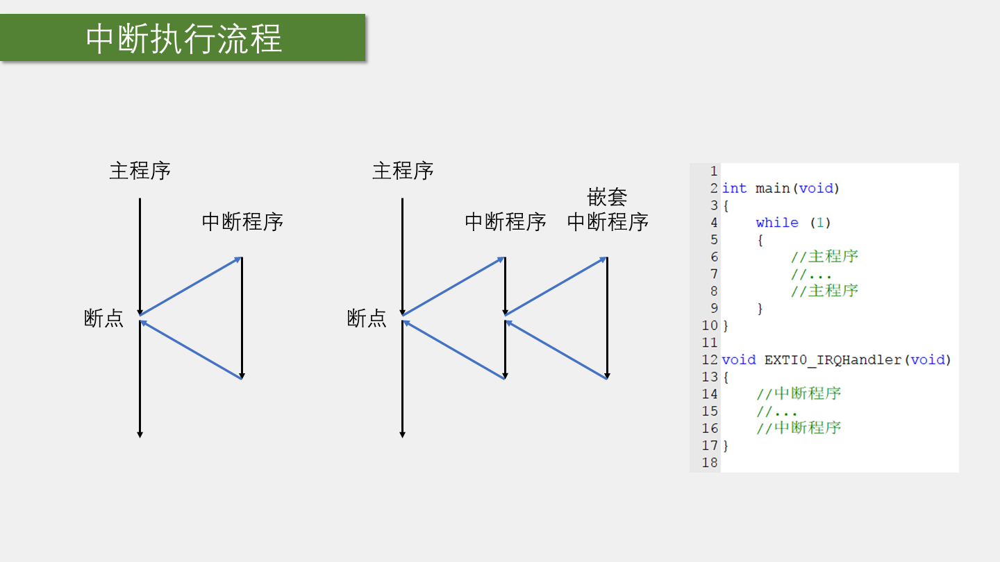
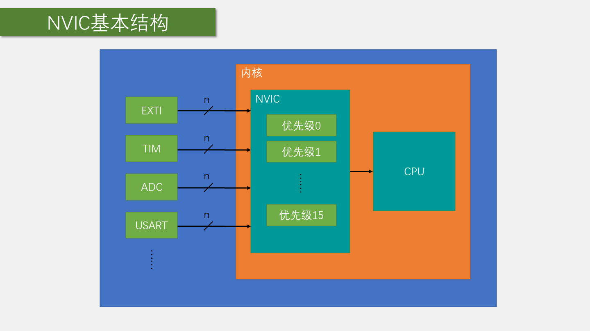
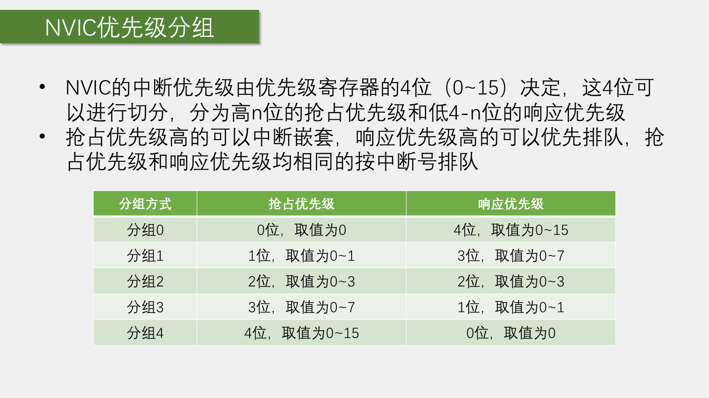

这一课要解决的问题
本课目标
读完你能：说出中断从触发到返回的完整流程；解释向量表是什么、放在哪；用抢占优先级和子优先级排出任意两个中断的执行顺序；说出中断服务函数里不能做的三件事，并解释原因。
上一课结尾留了个问题：轮询框架没法"立刻响应"。这一课解决它。
中断是嵌入式和普通 C 语言编程最大的分水岭。面试官几乎必问，因为它能同时考察你对硬件、编译器和并发编程的理解。
本课的代码按 CubeIDE 真实工程组织：main.c 只留初始化和主循环，中断回调这类"某个外设/某个业务专属"的代码放到 Hardware/ 或 App/，stm32f1xx_it.c 里的中断入口由 CubeMX 生成、不手写。每个代码块上方都会写清文件路径。
1. 先看一个具体场景
假设主循环在跑跑马灯，第 3 个灯刚亮。这时候按键被按下。
没有中断：CPU 要继续走完整个跑马灯循环，可能 1 秒后才"顺便"检查到按键。你的手指早就抬起来了。如果按得快，这一下直接丢失。
有中断：按键电平变化的瞬间，硬件强行让 CPU 停下当前的事，跳到一段专门的代码处理按键，处理完再回来继续跑跑马灯——而且回来时所有寄存器都恢复原样，跑马灯完全感觉不到被打断过。
中断的三个要素
- 硬件检测：外设（GPIO、定时器、串口）发现事件，置一个标志位。
- 硬件跳转：CPU 保存现场，根据向量表跳到一个固定地址。
- 软件处理：你写的函数接管，处理完执行特殊返回指令，CPU 恢复现场。
你只负责第 3 步，但理解 1、2 才能解释"为什么中断有延迟""为什么会丢事件"。
2. 中断响应：硬件替你做的 8 字压栈（约 12 个周期）
这是本课最硬核的部分，但也是最能体现"懂原理"的部分。
几个必须知道的细节：
- 压栈 8 个字 = 32 字节。其中
PC存的是"被打断那条指令的下一条"，所以返回后能接着跑。 - 入栈出栈由硬件完成，不需要你写代码。这就是为什么 ISR 可以写成普通 C 函数，不必手写汇编。
LR被赋了一个特殊值0xFFFFFFF9。ISR 结束时执行BX LR，硬件看到这个魔数就知道"要做中断返回"，于是自动出栈。- 整个过程约 12 个周期，72MHz 下约 0.17μs。这就是为什么中断能做到"微秒级响应"，而轮询做不到。
为什么压栈是 8 个字而不是全部 16 个
Cortex-M3 的 AAPCS（ARM 调用约定）规定：函数调用时，R0R3、R12、LR、PC、xPSR 由调用者保存，R4R11 由被调用者保存。
硬件只压"调用者保存"的 8 个，剩下的 R4R11 由编译器在 ISR 开头 R11，就不必压——省时间。PUSH {r4-r11}。这样如果一个 ISR 没用到 R4
这是硬件和编译器分工的经典设计：硬件保证最小正确性，编译器按需补充。
3. 向量表：中断的"电话簿"
CPU 被中断时，怎么知道该跳到哪个函数？
答案：查表。这张表叫中断向量表，每个表项 4 字节，存的是函数地址。
| 偏移 | 内容 |
|---|---|
0x00 |
初始 MSP（主栈顶地址），不是函数 |
0x04 |
Reset_Handler（复位） |
0x08 |
NMI_Handler |
0x0C |
HardFault_Handler |
0x10 |
MemManage_Handler |
0x14 |
BusFault_Handler |
0x18 |
UsageFault_Handler |
| ... | ... |
0x3C |
SVC_Handler |
0x40 |
DebugMon_Handler |
0x44 |
PendSV_Handler |
0x48 |
SysTick_Handler |
0x4C 起 |
外设中断：WWDG、PVD、EXTI0、EXTI1… |
第 0 项不是函数，是栈顶地址
0x0800_0000 存的是初始栈指针（指向 SRAM 末尾 0x2000_5000），不是函数指针。
芯片复位时，硬件先从这里加载 SP，再从 0x0804 加载 PC 跳到 Reset_Handler。所以向量表必须放在 Flash 最开头——这是第 1 课说的"为什么向量表必须在最前面"的原因。
3.1 为什么叫 xxx_Handler
打开 startup_stm32f103xb.s（汇编启动文件，CubeMX 生成，不用改），你会看到：
文件：Core/Startup/startup_stm32f103xb.s（CubeMX 生成的启动文件，不用你手写）
.word _estack
.word Reset_Handler
.word NMI_Handler
.word HardFault_Handler
...
.weak EXTI0_IRQHandler
.thumb_set EXTI0_IRQHandler, Default_Handler
.weak 的意思是"弱符号"：如果你在 C 代码里定义了同名函数，链接器就用你的；没定义就用默认的 Default_Handler（一个死循环）。
所以你不能随便改名。要写 EXTI0 的中断处理，函数名必须是 EXTI0_IRQHandler，一字不差。
名字从哪来
这个名字由 CMSIS 头文件规定，不是 ST 随便起的。EXTI0_IRQn 是中断号（枚举值），EXTI0_IRQHandler 是对应的函数名。
HAL 又包了一层：EXTI0_IRQHandler() 里调用 HAL_GPIO_EXTI_IRQHandler(GPIO_PIN_0)，后者清理标志位并回调你写的 HAL_GPIO_EXTI_Callback()。s8 会看到完整链路。
4. NVIC：中断的调度中心
NVIC（Nested Vectored Interrupt Controller，嵌套向量中断控制器）是内核里的一块硬件，负责回答一个问题：同时来了好几个中断，先处理谁？
4.1 优先级：数值越小越高
C8T6（中容量）有 43 个可屏蔽中断（大容量型号才有 60 个），每个有一个 8 位优先级寄存器，但 ST 只实现了高 4 位，所以优先级取值 0~15，0 最高，15 最低。
反直觉但必须记牢
优先级数字越小，级别越高。
HAL_NVIC_SetPriority(EXTI0_IRQn, 0, 0) = 最高优先级
HAL_NVIC_SetPriority(EXTI0_IRQn, 15, 0) = 最低优先级
4.2 抢占优先级 vs 子优先级
4 位优先级可以拆成两部分，拆法由"优先级分组"决定：
| 分组 | 抢占位数 | 子优先级位数 | 抢占级数 | 子级数 |
|---|---|---|---|---|
| GROUP_4 | 4 | 0 | 16 | 1 |
| GROUP_3 | 3 | 1 | 8 | 2 |
| GROUP_2 | 2 | 2 | 4 | 4 |
| GROUP_1 | 1 | 3 | 2 | 8 |
| GROUP_0 | 0 | 4 | 1 | 16 |
两者的区别是核心考点：
- 抢占优先级：决定"能不能打断"。高抢占级可以打断正在执行的低抢占级 ISR，形成嵌套。
- 子优先级：只在同时挂起时决定"谁先执行"。子优先级高的不能打断已经在跑的 ISR。
一句话记住
抢占优先级管"插队"，子优先级管"排队"。
两个中断抢占级相同、子级不同：先来的那个跑完，另一个才跑，不会嵌套。 两个中断抢占级不同：高的随时能打断低的。
HAL_Init() 默认设成 GROUP_4，也就是 4 位全给抢占，没有子优先级。这是最常用的配置——因为大多数场景只需要"谁能打断谁"，不需要"同级之间谁先"。
为什么默认选 GROUP_4
因为简单且够用。绝大多数项目里中断不超过 16 个，4 位抢占足够分级。
一旦你用了 FreeRTOS，它会把分组改成 GROUP_4 并强制所有 ISR 抢占级 ≥ 5（configMAX_SYSCALL_INTERRUPT_PRIORITY），低于 5 的留给"不受 RTOS 管理"的紧急中断。这个细节在 s17 会遇到。
4.3 中断嵌套
文件：Core/Src/stm32f1xx_it.c（示意代码：A/B 是假想中断名，只演示嵌套，F103 里没有这两个外设）
/* A/B 是假想的中断名，真实中断必须叫 EXTI0_IRQHandler、TIM3_IRQHandler
* 这种固定名字（见 §3.1）。下面函数里没有一行在配优先级——
* 优先级是 HAL_NVIC_SetPriority(A_IRQn, 5, 0) 设的。
*/
void A_IRQHandler(void) /* 抢占级 5：数字大 = 级别低 */
{
/* 正在执行……此时 B（抢占级 2）到来 */
/* B 抢占了 A，A 被硬件压栈暂停；B 返回后 A 从这里继续 */
}
void B_IRQHandler(void) /* 抢占级 2：数字小 = 级别高，能打断 A */
{
/* 短、快、马上返回 */
}
为什么"能打断"靠的是抢占级而不是子级：子级只在两个中断同时挂起时决定谁先进，它永远不产生嵌套（见 §4.2 那张表）。
哪些没写：HAL_NVIC_SetPriority() 和 HAL_NVIC_EnableIRQ() 这两步由 CubeMX 生成在 Core/Src/stm32f1xx_hal_msp.c 的 HAL_GPIO_EXTI_MspInit() 里；你在 NVIC 页面填的数字最终就变成这两句。手写也行，但重新生成代码时容易和 CubeMX 的配置打架。
嵌套深度受栈大小限制。每嵌套一层，多压 32 字节 + ISR 自己的局部变量。20KB SRAM 里栈一般只分 1~2KB，嵌套 5 层以上就有栈溢出风险。
栈溢出是 HardFault 的头号原因
现象：程序跑一段时间后突然进 HardFault_Handler 死循环，或者变量莫名其妙被改。
原因：栈从 SRAM 顶部往下长，溢出后会写坏堆或其他全局变量，而且不报错。
排查：在 startup_stm32f103xb.s 里找到 _Min_Stack_Size，默认 0x400（1KB）。如果你中断嵌套多或者 ISR 里有大数组，改成 0x800 或更大。
更彻底的排查是给栈填魔数（如 0xDEADBEEF），运行一段时间后看有多少被改写。
5. ISR 里绝对不能做的三件事
这是面试高频，也是实际开发最容易出 bug 的地方。
① 不能长时间阻塞
文件：Core/Src/stm32f1xx_it.c（错误示范片段，别照抄）
/* EXTI0_IRQHandler 的函数体。CubeMX 生成的正确写法只有一句
* HAL_GPIO_EXTI_IRQHandler(GPIO_PIN_0)；下面故意写错，用来说明为什么不能在中断里阻塞。
*/
void EXTI0_IRQHandler(void)
{
HAL_Delay(20); /* ❌ 死锁：它等 uwTick，而 SysTick 优先级 15 抢不进来（s6 讲过） */
for (int i = 0; i < 1000000; i++); /* ❌ 不死锁，但白占 CPU 十几毫秒 */
HAL_GPIO_EXTI_IRQHandler(GPIO_PIN_0); /* 挂起位拖到最后才清，延时期间一直挂着 */
}
注意最后一句的顺序：清标志必须发生在中断处理的最前面。你在它之前拖 20ms，挂起位就一直为 1，中断返回瞬间又会被立刻重新触发。
中断执行期间，同级和更低级的中断都无法响应。你拖 1ms，串口就可能丢一个字节（115200 下每位 8.7μs，一个字节 87μs）。
正确做法：ISR 里只置一个标志位，处理放主循环。下面这段是真实的驱动写法——回调属于按键驱动，所以放在 Hardware/Src/key.c，而不是塞回 main.c。
文件：Hardware/Src/key.c（片段：只演示"中断只置标志"，完整三文件见 §8）
#include "key.h"
volatile uint8_t key_flag = 0; /* 中断写、主循环读 → 必须 volatile */
/* HAL 的所有 EXTI 线共用这一个回调，所以必须判断是哪个脚 */
void HAL_GPIO_EXTI_Callback(uint16_t GPIO_Pin)
{
if (GPIO_Pin == KEY_Pin) { /* KEY_Pin 来自 main.h，CubeMX 按 User Label 生成 */
key_flag = 1; /* ✅ 只置标志，几十个周期就返回 */
}
}
主循环里就一句 if (key_flag) { key_flag = 0; /* 慢慢处理 */ }；§8 会把它再封装成 Key_TakeEvent()。
为什么不用直接往 EXTI0_IRQHandler 里写你的处理：那样就绕过了 HAL，EXTI->PR 的挂起位得你自己清——忘一句就是中断风暴；而且 stm32f1xx_it.c 是 CubeMX 生成的文件，你的代码下次生成会被覆盖。用 HAL 回调的代价只是多一层函数调用（几十个周期），换来"标志位永远有人清"。
哪些没写：EXTI0_IRQHandler 和 NVIC 使能都在生成代码里——stm32f1xx_it.c 里那句 HAL_GPIO_EXTI_IRQHandler(GPIO_PIN_0)、stm32f1xx_hal_msp.c 的 HAL_GPIO_EXTI_MspInit() 里那句 HAL_NVIC_EnableIRQ(EXTI0_IRQn)。你只写回调和主循环。
② 不能调用非可重入函数
printf、malloc、HAL_Delay 这些都不可重入。如果主循环正在 printf，中断里又调 printf，内部缓冲区和状态机会被打乱，输出乱码甚至死锁。
规则：ISR 里只调用你自己写的、确定可重入的函数，或者明确的 _fromISR 版本（FreeRTOS 里所有 API 都有这个后缀）。
③ 不能做耗时运算
浮点除法、大数组拷贝、字符串处理——这些在 ISR 里做会让中断响应时间不可预测。
量化一下：一个 100 次迭代的 float 运算在 M3 上要几百个周期（M3 没有硬件 FPU），约 10μs。10μs 内如果有两个中断到来，第二个就要等。对高速外设（SPI、I2S）这是不能接受的。
ISR 的设计原则
"快进快出"：ISR 只做三件事——清标志位、保存数据、置标志或发信号量。所有业务逻辑放在主循环或任务里。
判断标准：ISR 执行时间应控制在几微秒内。超过 10μs 就要考虑拆分。
6. volatile：中断里最容易漏的关键字
文件：Core/Src/main.c 的 USER CODE BEGIN 0（全局变量区；下面两行二选一，别同时写）
uint8_t key_flag = 0; /* ❌ 可能被优化掉：主循环永远看不到中断的修改 */
volatile uint8_t key_flag = 0; /* ✅ 正确：每次都从内存重新读 */
为什么必须加 volatile？
编译器优化时看到 文件：Core/Src/main.c 的 USER CODE BEGIN 3（主循环片段）：
while (key_flag == 0) { } /* 每圈重新读内存；没 volatile 就可能只读一次 */
key_flag = 0; /* 看到 1 后清掉，继续干活 */
它会想："这个循环里没有任何东西修改 key_flag，那条件永远不变，不如只读一次放寄存器里。" 于是编译成：
文件：Core/Src/main.c 编译后的反汇编（编译器生成，不用你写）
LDR r0, [key_flag] ; 只读一次
CMP r0, #0
BEQ .loop_forever ; 永远循环
而实际改 key_flag 的是中断（在编译器看来是"不可能发生的事"），于是死循环。
volatile 告诉编译器："这个变量可能被程序之外的力量改变，每次都要从内存重新读。"
volatile 的三个使用场景
- 中断和主程序共享的变量（最常见）
- 硬件寄存器（所以 HAL 里所有寄存器指针都是
volatile） - 多任务共享的变量（RTOS 场景）
注意 volatile 不保证原子性。volatile uint32_t x; x++; 依然是读-改-写三步，中断插进来照样出错。要原子性得用临界区或原子指令。
7. 临界区：暂时关掉中断
有时候必须保证一段代码不被打断，比如更新一个 32 位变量（在 8 位机上可能分两次写）：
文件：App/Src/latency.c（示例：就地包住要保护的几行）
/* __disable_irq/__enable_irq 是 CMSIS 函数（core_cm3.h），直接操作 PRIMASK 寄存器 */
__disable_irq(); /* PRIMASK = 1：除 NMI、HardFault 外全部中断被屏蔽 */
shared_counter++; /* 读-改-写三步，不能被中断插进来 */
__enable_irq(); /* ❌ 无脑开中断：如果外层本来就关了，这里会把外层也打开 */
Cortex-M3 提供了更精细的方式：
文件：App/Src/latency.c（示例：共享变量的更新点，推荐写法）
uint32_t primask = __get_PRIMASK(); /* 保存进入前的 PRIMASK 值（0 或 1） */
__disable_irq(); /* 关中断 */
/* 临界区 */
__set_PRIMASK(primask); /* 原样恢复：外层关着就继续关，外层开着才开 */
为什么要保存/恢复？因为这段代码可能本身就在中断里，外层已经关了中断，你无脑 __enable_irq() 会把外层也打开，造成嵌套错误。
为什么不用 volatile 替代临界区：volatile 只保证"每次都从内存读"，不保证三步不被切开（见 §6 的 Warn），也拦不住别处的中断。
为什么不用 __HAL_LOCK()：那把锁是保护"外设句柄不被两个流程同时操作"的，不是关中断用的，它挡不住 ISR 的抢占。
临界区要尽可能短
关中断期间，所有中断都被延迟。关 100μs，串口就可能丢数据。
经验值：临界区控制在几十个时钟周期内。超过就要重新设计数据结构（比如用无锁环形缓冲区、双缓冲）。
HAL 里 __HAL_LOCK() / __HAL_UNLOCK() 就是干这个的——它防止两个任务同时操作同一个外设句柄。
8. 一个完整例子：把 s6 的按键搬到中断
先把文件放好，再按"头文件 → 驱动 → main"的顺序写。按键的抖动判断属于驱动职责，因此放进 Hardware/；main.c 里只消费"有一次按键"这个事件。
| 文件 | 文件夹 | 作用 |
|---|---|---|
key.h |
Hardware/Inc/ |
引脚/消抖宏、Key_TakeEvent 声明 |
key.c |
Hardware/Src/ |
EXTI 回调、20ms 时间戳消抖、事件标志 |
main.c |
Core/Src/ |
初始化、主循环里取事件并翻转 LED |
main.h、gpio.c、stm32f1xx_it.c、stm32f1xx_hal_msp.c |
Core/ |
CubeMX 生成（PA0=EXTI0、PC13=输出、NVIC 抢占级 2），不手写 |
文件：Hardware/Inc/key.h
#ifndef __KEY_H
#define __KEY_H
#ifdef __cplusplus
extern "C" {
#endif
#include "main.h"
/* KEY_Pin / KEY_GPIO_Port：CubeMX 里把 PA0 的 User Label 设为 KEY 后生成在 main.h */
#define KEY_DEBOUNCE_MS 20U /* 抖动窗口：必须大于最大机械抖动时间 */
uint8_t Key_TakeEvent(void); /* 主循环调用：1 = 有一次有效按下 */
#ifdef __cplusplus
}
#endif
#endif /* __KEY_H */
文件：Hardware/Src/key.c
#include "key.h"
static volatile uint8_t s_pressed = 0; /* 中断置 1，主循环消费后清 0 */
static volatile uint32_t s_event_tick = 0; /* 这次事件发生的时刻（ms） */
static uint32_t s_last_exti = 0; /* 上次被接受的中断时刻（ms） */
/* CubeMX 生成的 EXTI0_IRQHandler 最终会调到这里 */
void HAL_GPIO_EXTI_Callback(uint16_t GPIO_Pin)
{
if (GPIO_Pin != KEY_Pin) return; /* 全工程只有一个 EXTI 回调，必须判断脚 */
uint32_t now = HAL_GetTick();
if (now - s_last_exti < KEY_DEBOUNCE_MS) return; /* 20ms 内的重入都当抖动丢掉 */
s_last_exti = now;
s_pressed = 1; /* 只置标志，不做业务 */
s_event_tick = now;
}
uint8_t Key_TakeEvent(void)
{
if (!s_pressed) return 0;
if (HAL_GetTick() - s_event_tick < KEY_DEBOUNCE_MS) return 0; /* 抖动期没过，先不消费 */
s_pressed = 0;
return 1;
}
文件：Core/Src/main.c
#include "main.h"
#include "gpio.h"
#include "key.h"
void SystemClock_Config(void);
int main(void)
{
HAL_Init();
SystemClock_Config();
MX_GPIO_Init(); /* PA0 的 EXTI 与 NVIC 都在这里配好（抢占级 2） */
while (1)
{
if (Key_TakeEvent()) {
HAL_GPIO_TogglePin(GPIOC, GPIO_PIN_13); /* 真正处理放在主循环 */
}
}
}
/* 以下两个函数是 CubeMX 生成的固定内容，不用你手写 */
void SystemClock_Config(void)
{
RCC_OscInitTypeDef osc = {0};
RCC_ClkInitTypeDef clk = {0};
osc.OscillatorType = RCC_OSCILLATORTYPE_HSE;
osc.HSEState = RCC_HSE_ON;
osc.HSEPredivValue = RCC_HSE_PREDIV_DIV1;
osc.PLL.PLLState = RCC_PLL_ON;
osc.PLL.PLLSource = RCC_PLLSOURCE_HSE;
osc.PLL.PLLMUL = RCC_PLL_MUL9; /* 8MHz × 9 = 72MHz */
if (HAL_RCC_OscConfig(&osc) != HAL_OK) { Error_Handler(); }
clk.ClockType = RCC_CLOCKTYPE_HCLK | RCC_CLOCKTYPE_SYSCLK
| RCC_CLOCKTYPE_PCLK1 | RCC_CLOCKTYPE_PCLK2;
clk.SYSCLKSource = RCC_SYSCLKSOURCE_PLLCLK;
clk.AHBCLKDivider = RCC_SYSCLK_DIV1;
clk.APB1CLKDivider = RCC_HCLK_DIV2; /* APB1 定时器时钟 72MHz，见 s5 */
clk.APB2CLKDivider = RCC_HCLK_DIV1;
if (HAL_RCC_ClockConfig(&clk, FLASH_LATENCY_2) != HAL_OK) { Error_Handler(); }
}
void Error_Handler(void)
{
__disable_irq();
while (1) { }
}
这个结构把"响应"和"处理"分开了：中断负责立刻记下事件（微秒级），主循环负责慢慢处理。
为什么这样拆：HAL_GPIO_EXTI_Callback 是"按键"这个外设的回调，将来要加第二个按键、加长按，都只改 key.c；main.c 永远只有"取事件→做动作"两行，不会随着按键逻辑变复杂而膨胀。
为什么不用 s6 的 10ms 轮询：轮询最坏要等一整圈循环才看到按键，按得快就丢了；中断是硬件记事件，跑不掉。
为什么不在回调里直接 HAL_Delay(20) 消抖：SysTick 优先级 15、EXTI 是 2，HAL_Delay 永远等不到，一按就死机（§5 ①）。
哪些没写：EXTI0_IRQHandler（stm32f1xx_it.c）、MX_GPIO_Init()（gpio.c）、main.h 里的 KEY_Pin 宏，全部由 CubeMX 生成。手写这些函数体没有意义，改配置要在 CubeMX 里改，再生成。
消抖窗口的两个边界
§8 的 key.c 已经把 20ms 时间戳判断放在 ISR 入口，这是正确位置。如果把它挪到主循环再判断，抖动期间的十几次中断都会把 s_pressed 置 1，主循环只看到"一次翻转"，但事件已经被合并，长按、连击都会算错。
20ms 窗口本身也有局限：
- 按住 1 秒再松开，松手抖动距离上次被接受的中断已超过 20ms，会被当成一次新的按下；
- 需要"松开也响应"时，要改成"下降沿关 EXTI + 20ms 定时器到期后读电平"的两步确认，s9 学完定时器可以回来实现。
下面用 static 局部变量写同样的逻辑，和 §8 的文件级 s_last_exti 等价：
文件：Hardware/Src/key.c 的 HAL_GPIO_EXTI_Callback（等价写法，用 static 局部变量）
void HAL_GPIO_EXTI_Callback(uint16_t GPIO_Pin)
{
static uint32_t last = 0; /* static：跨多次中断保留上次时刻 */
uint32_t now = HAL_GetTick();
if (GPIO_Pin != KEY_Pin) return; /* 只处理这个按键 */
if (now - last < 20) return; /* 20ms 内的重入都当抖动丢掉 */
last = now;
s_pressed = 1; /* 这才是真正的按键事件 */
}
static 不能省：写成普通局部变量，每次进中断都被初始化成 0，now - 0 永远大于 20，消抖完全失效——现象和没写一样。
s8 会完整讲这个问题。
9. 动手项目
动手项目
观测中断时延
用示波器或逻辑分析仪（没有的话用调试器的 Cycle Counter）测量一次中断的响应时间：
- 配一个 EXTI，在 ISR 第一行翻转某个 GPIO。
- 在主循环里用
DWT->CYCCNT（内核周期计数器）记录时间。 - 对比"事件发生时刻"和"ISR 第一行执行时刻"。
验收标准：
- 能说出实测出的延迟是多少个时钟周期。
- 能在 ISR 里加一段 1ms 忙等，观察到延迟变成几万个周期（证明阻塞的代价）。
- 能画出中断的入栈/出栈过程并解释每一步。
没有示波器怎么办：用 DWT->CYCCNT。DWT 是 Cortex-M3 内核自带的周期计数器，不属于任何外设，使能后每来一个 72MHz 时钟加 1。
为什么不用 SysTick 测：SysTick 一次跳 1ms，测不了微秒级的中断延迟。
为什么不用定时器 TIM 测：要额外占一个外设、还要配 PSC，而且它同样以 1μs 或更粗的粒度计数。DWT 是内核免费附带的，只读一个寄存器，最省事。
9.1 文件放置表
| 文件 | 文件夹 | 作用 |
|---|---|---|
latency.h |
App/Inc/ |
周期换算宏、探针脚、extern 结果、函数声明 |
latency.c |
App/Src/ |
DWT 使能、软件触发 EXTI0、ISR 打点换算延迟 |
main.c |
Core/Src/ |
初始化、主循环触发与处理 |
main.h、gpio.c、stm32f1xx_it.c、stm32f1xx_hal_msp.c |
Core/ |
CubeMX 生成：PA0=EXTI0（下降沿，抢占级 2）、PA1=推挽输出、PC13=LED；不手写 |
先在 CubeMX 里加 PA1 为 GPIO_Output（User Label 设 PROBE），否则探针脚没有初始化。
9.2 完整代码（头文件 → 驱动 → main.c）
文件：App/Inc/latency.h
#ifndef __LATENCY_H
#define __LATENCY_H
#ifdef __cplusplus
extern "C" {
#endif
#include "main.h"
#define CYCLES_PER_US 72U /* 72MHz 下 1μs = 72 个内核周期 */
#define LATENCY_BLOCK_US 1000U /* 实验用：ISR 里故意加的忙等，单位 μs；改 0 关闭 */
/* 探针脚：PA1，CubeMX 里配成推挽输出；ISR 第一行拉高、末行拉低 */
#define PROBE_GPIO_Port GPIOA
#define PROBE_Pin GPIO_PIN_1
void Latency_Init(void); /* 使能 DWT，必须在 HAL_Init() 之后调用 */
void Latency_Trigger(void); /* 主循环调用：软件触发一次 EXTI0 */
void Latency_OnIsrEntry(void); /* 在 HAL_GPIO_EXTI_Callback 里调用 */
void Latency_Poll(void); /* 主循环调用：有新结果时更新 LED */
extern volatile uint32_t g_latency_us; /* 最近一次测得的延迟（μs） */
extern volatile uint32_t g_isr_count; /* 已进入 ISR 的次数 */
#ifdef __cplusplus
}
#endif
#endif /* __LATENCY_H */
文件：App/Src/latency.c
#include "latency.h"
volatile uint32_t g_latency_us = 0;
volatile uint32_t g_isr_count = 0;
static volatile uint32_t s_trigger_cycles = 0; /* 触发时刻的周期数 */
void Latency_Init(void)
{
CoreDebug->DEMCR |= CoreDebug_DEMCR_TRCENA_Msk; /* 打开跟踪单元，不开 DWT 不计数 */
DWT->CYCCNT = 0; /* 清零：从这一刻开始数 */
DWT->CTRL |= DWT_CTRL_CYCCNTENA_Msk; /* 使能 CYCCNT */
}
void Latency_Trigger(void)
{
s_trigger_cycles = DWT->CYCCNT; /* 先记下"事件"时刻 */
EXTI->SWIER = EXTI_SWIER_SWIER0; /* 软件置 EXTI0 挂起位，
* 后面的路径和真实边沿完全一样：
* NVIC → 向量表 → EXTI0_IRQHandler */
}
/* 由 HAL_GPIO_EXTI_Callback 调用，是"你的代码能执行的第一刻" */
void Latency_OnIsrEntry(void)
{
uint32_t now = DWT->CYCCNT;
HAL_GPIO_WritePin(PROBE_GPIO_Port, PROBE_Pin, GPIO_PIN_SET); /* 示波器看这个沿 */
g_latency_us = (now - s_trigger_cycles) / CYCLES_PER_US;
#if (LATENCY_BLOCK_US > 0)
/* 忙等约 LATENCY_BLOCK_US 微秒：72MHz 下一条空循环约 6 个周期，
* 1000μs 约需 1000×72/6 = 12000 次。不要用 HAL_Delay，会死锁（s7 §5）。 */
for (volatile uint32_t i = 0; i < LATENCY_BLOCK_US * 12U; i++) { }
#endif
HAL_GPIO_WritePin(PROBE_GPIO_Port, PROBE_Pin, GPIO_PIN_RESET);
g_isr_count++;
}
/* 全工程唯一的 EXTI 回调；放在驱动/业务文件里，不写进 stm32f1xx_it.c */
void HAL_GPIO_EXTI_Callback(uint16_t GPIO_Pin)
{
if (GPIO_Pin == GPIO_PIN_0) { /* 软件触发与真实按键都走 EXTI0 */
Latency_OnIsrEntry();
}
}
void Latency_Poll(void)
{
static uint32_t last_count = 0;
if (g_isr_count == last_count) return; /* 没有新样本 */
last_count = g_isr_count;
/* 超过 5μs 点亮板载 LED（PC13 低电平点亮），不接示波器也能看出阻塞的代价 */
HAL_GPIO_WritePin(GPIOC, GPIO_PIN_13,
(g_latency_us > 5U) ? GPIO_PIN_RESET : GPIO_PIN_SET);
}
文件：Core/Src/main.c
#include "main.h"
#include "gpio.h"
#include "latency.h"
void SystemClock_Config(void);
int main(void)
{
HAL_Init();
SystemClock_Config();
MX_GPIO_Init(); /* PA0=EXTI0 下降沿/抢占级 2，PA1=推挽输出，PC13=LED */
Latency_Init(); /* DWT 依赖调试单元，必须放在 HAL_Init() 之后 */
while (1)
{
Latency_Trigger(); /* 模拟一次外部事件；有真实按键时可直接按按键 */
Latency_Poll(); /* 读取结果，更新 LED */
HAL_Delay(500); /* 每 500ms 测一次；HAL_Delay 在主循环里用是安全的 */
}
}
/* 以下两个函数是 CubeMX 生成的固定内容，不用你手写 */
void SystemClock_Config(void)
{
RCC_OscInitTypeDef osc = {0};
RCC_ClkInitTypeDef clk = {0};
osc.OscillatorType = RCC_OSCILLATORTYPE_HSE;
osc.HSEState = RCC_HSE_ON;
osc.HSEPredivValue = RCC_HSE_PREDIV_DIV1;
osc.PLL.PLLState = RCC_PLL_ON;
osc.PLL.PLLSource = RCC_PLLSOURCE_HSE;
osc.PLL.PLLMUL = RCC_PLL_MUL9; /* 8MHz × 9 = 72MHz */
if (HAL_RCC_OscConfig(&osc) != HAL_OK) { Error_Handler(); }
clk.ClockType = RCC_CLOCKTYPE_HCLK | RCC_CLOCKTYPE_SYSCLK
| RCC_CLOCKTYPE_PCLK1 | RCC_CLOCKTYPE_PCLK2;
clk.SYSCLKSource = RCC_SYSCLKSOURCE_PLLCLK;
clk.AHBCLKDivider = RCC_SYSCLK_DIV1;
clk.APB1CLKDivider = RCC_HCLK_DIV2;
clk.APB2CLKDivider = RCC_HCLK_DIV1;
if (HAL_RCC_ClockConfig(&clk, FLASH_LATENCY_2) != HAL_OK) { Error_Handler(); }
}
void Error_Handler(void)
{
__disable_irq();
while (1) { }
}
实测参考：关掉忙等（LATENCY_BLOCK_US 改 0）时，从软件置位到回调第一行的 g_latency_us 通常是 13μs（约 72200 个周期），其中大部分花在 HAL 的分发函数上；把忙等打开后，g_latency_us 会跳到 1000μs 上下（约 7 万个周期）——这就是"ISR 里阻塞 1ms"的真实代价。
为什么把测量逻辑放 App/ 而不是 main.c：main.c 只该有"初始化 + 主循环"；DWT 使能、触发、换算都是可复用的测量功能，将来别的实验也要用，放 App/Src/latency.c 才能不改 main.c 就复用。
为什么不用"进中断就翻转 LED"来量：HAL_GPIO_TogglePin 本身要几个微秒，会把测量对象和测量工具混在一起；这里用 1 个寄存器的 DWT->CYCCNT 只是读内存映射寄存器，干扰最小。
哪些没写：MX_GPIO_Init()（PA0/PA1/PC13 的引脚配置）、HAL_GPIO_EXTI_MspInit()（EXTI0 的 NVIC 使能）、EXTI0_IRQHandler()（stm32f1xx_it.c）、SystemClock_Config() 都是 CubeMX 生成。要改探针脚或优先级，回 CubeMX 改，不要手改这些函数。
练习 1：排优先级
三个中断：A 抢占级 3、B 抢占级 1、C 抢占级 3（子优先级：A=0、B=0、C=1）。A 正在执行时，B 和 C 同时到来。执行顺序是什么？
参考答案
顺序：B → A → C
逐步分析：
- A 在跑（抢占级 3）。
- B（抢占级 1）到来，1 < 3，数值更小 = 优先级更高，所以 B 抢占 A。A 暂停。
- C（抢占级 3）也到来了，但抢占级与 A 相同，不能抢占 A，只能排队等。
- B 执行完 → 回到 A 继续。
- A 执行完 → 轮到 C（同抢占级，按到达顺序；子优先级只在"同时挂起"时比较，且 C 的子级 1 比 A 的 0 低，但 A 已经在跑了，不参与比较）。
- C 执行完。
关键点：子优先级永远不会造成抢占。它只在多个中断同时等待 CPU 时决定谁先进。
练习 2：为什么 printf 不能放中断里
有人在 EXTI0_IRQHandler 里写了 printf("key\r\n")。串口 115200 波特率，一行 5 个字符。会有什么问题？要多久？
参考答案
两个问题：
- 耗时太长。115200 波特率下每字节约 87μs，5 个字符约 435μs。这期间同级和更低级中断全部被挂起，按键会丢、定时器会漂、串口接收可能溢出。
- 不可重入。
printf内部有静态缓冲区，如果主循环正在打印时中断又进来打印，缓冲区被覆盖，输出乱码甚至死锁（取决于库实现）。
正确做法：ISR 里只置标志或往环形缓冲区写一个字节（几十个周期），主循环负责格式化输出。
如果是 HAL 的 HAL_UART_Transmit，它内部也是轮询等待发送完成，同样不能在中断里用。要中断里发数据，用 HAL_UART_Transmit_IT 或者 DMA。
附：PPT 原图对照

PPT 第 42 页：中断执行流程。对照正文第 2 节的"硬件压栈 8 个字、查向量表、出栈恢复"。

PPT 第 44 页：NVIC 与外设中断源的关系。所有外设的请求都汇总到 NVIC，再由它按优先级送给 CPU。

PPT 第 45 页：优先级分组表。正文第 4.2 节的表格就是这页的整理，两处对照看能加深印象。
10. 本课小结
- 中断流程：硬件压 8 个字（约 12 周期）→ 查向量表 → 执行 ISR → 硬件出栈 → 恢复。
- 向量表在 Flash 起始
0x0800_0000，第 0 项是初始 SP，不是函数；第 1 项是Reset_Handler。 - ISR 函数名必须和启动文件里的
xxx_IRQHandler一致，否则链接到默认死循环。 - 优先级数值越小越高；抢占级管"能否打断"，子级管"同时挂起时谁先"。
HAL_Init()默认 GROUP_4（4 位全抢占，16 级）。- 中断嵌套会消耗栈，20KB SRAM 里栈溢出是 HardFault 的常见原因。
- ISR 三不做：不阻塞、不调非可重入函数、不做耗时运算。
- 中断与主循环共享的变量必须
volatile，但它不保证原子性。 - 临界区要短，恢复时要
__set_PRIMASK(原值)而不是无脑开中断。 - 工程上：
main.c只留初始化和主循环，回调放Hardware/或App/，stm32f1xx_it.c由 CubeMX 生成。
自检
- 我能说出中断时硬件压了哪 8 个寄存器
- 我知道向量表第一项存的是什么
- 我能解释抢占优先级和子优先级的区别
- 我能排出两个中断的执行顺序
- 我能说出 ISR 里不能做的三件事和原因
- 我知道
volatile解决什么问题、不解决什么问题 - 我知道栈溢出会表现成什么现象
- 我能按文件把中断代码拆到
Hardware/、App/、main.c里
下一课预告：s8 外部中断 EXTI：按键用中断方式处理。把这一课的理论落到按键上：EXTI 的 16 条线怎么和 80 多个引脚对应（为什么 PA0 和 PB0 不能同时用）、EXTI0_IRQHandler 到你的回调函数之间隔了几层、以及按键抖动为什么会触发十几次中断、怎么在中断里正确消抖。